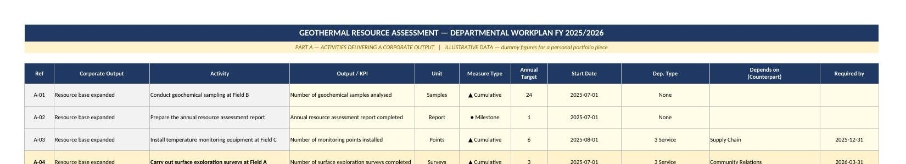
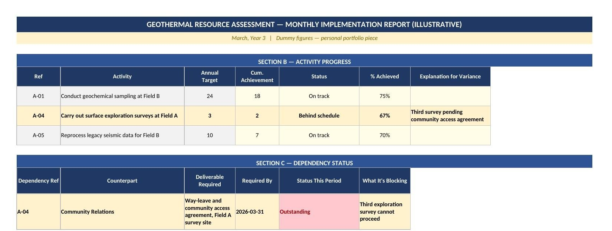
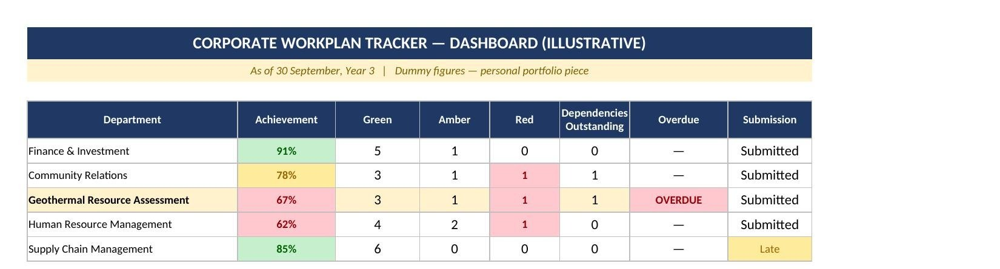

From GDC's Strategic Plan to a department's monthly update, and back. A decomposition method, a dependency framework, and a consolidation tool I designed and now run every month, traced here through one real activity across all six layers of the cascade.
GDC's corporate workplan is approved once a year. Then it has to survive twenty-five departments, each filling in its own share of it and reporting monthly, for a full financial year. Most organisational M&E systems succeed or fail in the space between a plan existing on paper and a plan actually being tracked, department by department, without the numbers quietly drifting apart.
This page describes the system I built to close that gap: a decomposition method that turns a corporate-level target into a specific department's activity, a dependency framework that names what a department is actually waiting on before a target can be hit, and a consolidation tool that rolls twenty-five departments' monthly updates into one corporate picture, so a department's own numbers and the corporate view always match.
What follows traces one real activity, illustrative figures throughout, from GDC's actual Strategic Plan down to a department's monthly update, and back up into the corporate dashboard. The same mechanism runs across all twenty-five departments. Following a single activity keeps the connections concrete rather than abstract.
Most organisational M&E diagrams show a straight line from strategy down to activity. This one closes back on itself, at year end and every time a dependency is logged.
GDC's own Strategic Plan reporting already includes a standardized taxonomy of why targets are missed, and "Dependency on External Stakeholders" is one of its named categories.
The dependency framework in this system exists to catch exactly that failure mode at the activity level, months before it could ever surface as a missed KRA target.
These are GDC's real KRAs. The strategies, activities, and figures below are illustrative. KRA 1's surface exploration survey is the activity traced through every layer that follows.
| KRA | Key activity | Output indicator | 5-yr / Y3 target | Actual | Lead dept. |
|---|---|---|---|---|---|
| 1 — Geothermal Resource DevelopmentTRACED BELOW | Surface exploration surveys, Field A | Surveys completed | 12 / 3 | 2 | Geothermal Resource Assessment |
| 2 — Financial Sustainability | Negotiate long-term power purchase agreements | PPAs signed | 4 / 1 | 1 | Finance & Investment |
| 3 — Stakeholder Management | Quarterly liaison meetings, project-affected areas | Meetings held | 20 / 4 | 3 | Community Relations |
| 4 — Organizational Capacity | Corporate technical training programme | Staff completing training | 500 / 100 | 62 | Human Resource Management |
A five-year target doesn't tell anyone what to do this year. Three surveys, due this year, assigned to Geothermal Resource Assessment, is the number that becomes a line in the Corporate Annual Workplan below.
At department level, "three surveys" becomes a real, trackable activity, the kind every department fills in for itself once a year. Every activity carries a measure type and a unit that matches what's actually being counted. Where a genuine dependency exists, it carries a named counterpart and a real date. Here's A-04 sitting among GRA's other illustrative activities, so the connection to a real, populated departmental workplan is something you can actually see.

That last row is the one that matters. GRA can't put a survey team on the ground until Community Relations has cleared access with the community living on that land, a genuine operational dependency, and exactly the kind of thing that's easy to leave unspoken until it's already cost you time.
Two of three surveys got done. The third didn't, because the community access agreement for that site was still outstanding. The reason sits right there in the report, dated, named, and traceable the whole way back to the KRA it affects. Section B tracks activity progress; Section C tracks dependency status, both shown with GRA's other illustrative activities around them.

That report stays with GRA, but the same figures also get copied into the Corporate Activity Register and Corporate Dependency Register, alongside the other twenty-four departments' updates. Nobody retypes anything at this stage. GRA's own numbers simply sit next to everyone else's. The "OVERDUE" flag isn't set manually by anyone, it fires on its own, the moment the required date passes with the agreement still outstanding.
Nobody updates the Dashboard directly. It reads off the two registers above and shows the position as it stands: GRA's 67% achievement in red, one dependency outstanding, one of them overdue. The picture is identical whether you're looking at GRA's own file or the corporate summary, because both are reading the same underlying numbers.

This dashboard is a separate thing from the Tableau dashboard elsewhere on this site. That one demonstrates Tableau specifically; this one is an Excel-based tool that belongs to this system.
The Tracker's year-end consolidated position, achievement against every department's targets rolled up corporately, becomes the raw material for the next Strategic Plan Implementation Status Report. The document reviewed to build this system, one year earlier, was itself an output of this same cycle.
The bottom of the cascade feeds the top with more than achievement numbers. It supplies the specific evidence that would justify a non-achievement classification, if one is ever needed: a named counterpart, a real date, a status that updates every month. An unexplained gap in a strategic report becomes a traceable, dated dependency.
Building the cascade was the design work. Keeping it accurate, once twenty-five departments were actively editing their own files, turned out to be the harder and less visible part of the job. Departmental files are living documents: rows get deleted to tidy up a template, activities get reordered, a column gets typed over. Each looks harmless alone. In a workbook where one sheet's formulas reference another by exact row position, any one of them can quietly break the link between a department's Dependency Register and the activity it's actually describing, with no visible error.
Catching this reliably took three specific habits: checking every cross-reference against its actual source, row by row; rebuilding broken linkages from first principles; and treating every fix as unverified until it had been re-checked against real data. A clean error count wasn't enough on its own to trust. Six months into the reporting cycle, a director needs the numbers on screen to still mean what they're supposed to mean, and that takes more than good indicator design.
One department's one activity is the example running through this page. The same mechanism runs across all twenty-five departments, every month, all year: the same registers, the same dependency logic, the same dashboard reading off the same numbers everyone else already typed in. Designing the cascade is a results-framework skill. Keeping twenty-five independently-edited files honest, month after month, calls on something closer to data quality assurance. The two are rarely demonstrated together in the same piece of work.
GDC and its organizational structure (the 25 departments, the 8 directorates, the four Key Result Areas) are real. Every strategy, activity, target, and figure shown on this page is illustrative, constructed to demonstrate how the system functions, not to disclose GDC's actual strategic performance or internal financial data.
This page has not been reviewed or endorsed by GDC. It is a personal portfolio artefact describing a system I designed and operate in my role there, not an official GDC publication. Any use beyond personal portfolio purposes should be confirmed with GDC first.
The underlying system, the decomposition method, the dependency framework, the consolidation tool, and the data-integrity discipline described here, is original work, genuinely designed and run in production. The specific figures shown stand in for GDC's actual reporting data, which is internal.